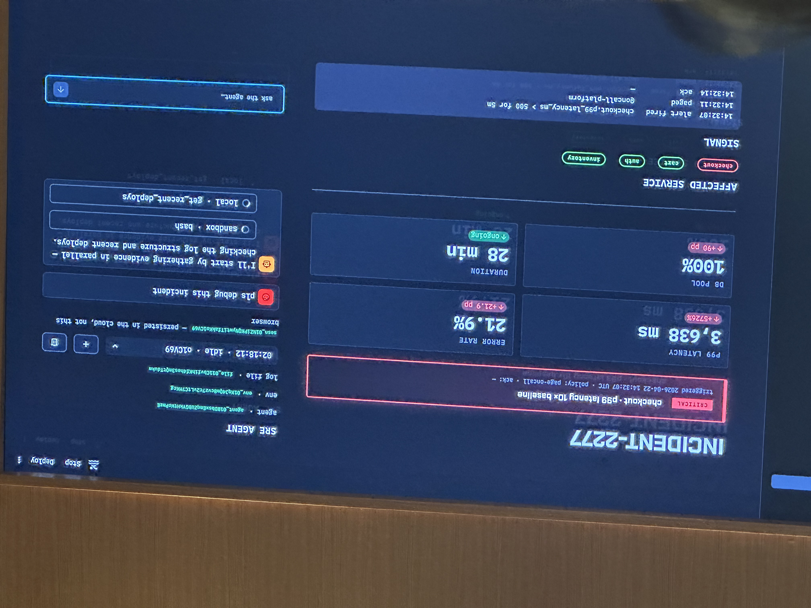

Workshop Goal
Title
Source: IMG_7411
Ship your first Managed Agent introduces Claude Managed Agents through a hands-on SRE incident investigator.
The repo material frames the exercise around Incident-2277: checkout p99 latency spikes to 10x baseline, and the agent must do the forty-minute human investigation loop for you.
Incident-2277 Exercise
Repo material plus live demo context
The app is a fictional e-commerce incident dashboard. Metrics, Logs, and Deploys work from local mock data. The SRE Agent panel starts offline; the workshop brings it online by implementing a small set of Managed Agents API calls.
| Evidence | Where it lives | What the agent does |
|---|---|---|
| 70,000 JSON log lines | app.log | Greps the log inside its managed sandbox. |
| Metrics | metrics.json | Checks p99 latency and failure rate. |
| Deploys | deploys.json | Correlates the incident with a deployment timestamp. |
| Diff | diff.txt | Finds the code change that introduced the N+1 query. |
Interface Evolution
Evolution Of Interfaces Used To Build Agents
Source: IMG_7412
| Messages API | Agent SDK | Managed Agents |
|---|---|---|
|
You manage:
Anthropic provides: tokens in and out. |
You manage:
SDK handles: agent loop, context management, caching, compaction, built-in tool execution, and retries. |
You provide:
Anthropic handles: purpose-built harness, context, sandbox, persistence, checkpointing, auth/OAuth, credential vault, hosting, scaling, observability, and tokens. |
Primary Resources
Three Primary Resources
Source: IMG_7413
/v1/agents
Persona and capabilities.
What the agent is: model, system prompt, tools, MCP servers, skills.
Versioned and immutable.
/v1/environments
Infrastructure and guardrails.
Where the agent runs: container config, networking, allowed hosts.
Set up once and reuse everywhere.
/v1/sessions
Spin up the conversation.
Pair the agent and environment, kick off one interaction, stream events back, and resume anytime.
The Brain Left The Box
Source: IMG_7414
The architectural shift is that the agent loop is no longer trapped inside one session container.
Before
One container per session held both the agent loop and tool execution. If the box died, the brain went with it.
Now
The brain is an Anthropic-managed agent loop: one service, many sessions, and crash survival. The hands are sandboxes provisioned on demand only when a tool needs one.
Demo Screenshot
Incident-2277 Live Demo
Source: IMG_7416. One blurry duplicate demo photo omitted.
This is the only screenshot retained for this workshop page. It preserves the live dashboard and agent/debug UI state that would be misleading to flatten into text.

Event Model
Sessions Speak In Events, Not Request/Response
Source: IMG_7417
Types follow a {domain}.{action} convention. The highlighted gap is the custom-tool round trip where the cloud agent calls a function on your laptop.
| Events you send | Events you receive |
|---|---|
|
|
The Cloud Agent Calls A Function On Your Laptop
Source: IMG_7418
No inbound networking is required. Your script holds the stream open; the cloud agent emits a custom-tool event over that stream, your local handler runs, and your script posts a result back into the session.
1. Cloud emits
agent.custom_tool_use2. Local script handles
handle_tool(name, args)3. Script posts result
user.custom_tool_resultSwap json.load("data/metrics.json") for a Datadog client and it is the same wire protocol.
Open The Stream, Send The Message, Answer Tool Calls Inline
Source: IMG_7419
with client.beta.sessions.events.stream(session_id) as stream:
client.beta.sessions.events.send(session_id, events=[
{
"type": "user.message",
"content": [{"type": "text", "text": q}],
}
])
for ev in stream:
if ev.type == "agent.custom_tool_use":
result = handle_tool(ev.name, ev.input)
client.beta.sessions.events.send(session_id, events=[
{
"type": "user.custom_tool_result",
"custom_tool_use_id": ev.id,
"content": [{"type": "text", "text": result}],
}
])
yield evSession Lifecycle
Four Session Statuses
Source: IMG_7420
Idle
Waiting for input: user messages or tool confirmations. This is the starting state.
Running
The agent is actively executing the loop.
Rescheduling
A transient error happened and the system is retrying automatically.
Terminated
The session ended due to an unrecoverable error.
The Conversation Lives In The Cloud
Source: IMG_7421
Hard-refresh the page and the session is still there. The session list and event replay are platform resources, not a local database you have to maintain.
client.beta.sessions.list(agent_id=...)
client.beta.sessions.events.list(session_id)Beyond The Basics
More Managed Agent Capabilities
Source: IMG_7422
Subagents
Callable agents that spawn and coordinate other agents.
Memory
Persistent agent memory mounted into the container.
Outcomes
Structured artifacts of what the agent produced, separate from events.
Vaults
Per-user credentials registered once and referenced by vault IDs.
MCP servers
Remote tool servers attached through MCP toolset entries.
Webhooks
Console settings that fire on session events such as idle status.
Permission policies
always_ask pauses a tool call for confirmation.
Interrupt
Post user.interrupt mid-run to force the agent to idle.
Console agent builder
Iterate interactively before dropping to the API.
What We Did Today
Source: IMG_7423
Got the mental model
Where managed agents sit in the stack and what the resources mean.
Shipped a working agent
Created an Agent and Environment, spun up a Session, streamed events back, and handled tool calls.
Know where to go next
Subagents, vaults, memory, webhooks, MCP, and other production surfaces.